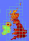

File:Cautley Spout - geograph.org.uk - 517733.jpg
Jump to navigation
Jump to search

No higher resolution available.
Cautley_Spout_-_geograph.org.uk_-_517733.jpg (640 × 480 pixels, file size: 67 KB, MIME type: image/jpeg)
Captions
Captions
Cautley Spout
Summary
[edit]{kind=link}
| Description |
English: Cautley Spout |
| Date | |
| Source | From geograph.org.uk |
| Author | Phil Catterall |
| Attribution (required by the license) | Phil Catterall / Cautley Spout / |
| Camera location | | View this and other nearby images on: OpenStreetMap |
|---|
_heading:315.00&language=en){kind=link}
| Object location | | View this and other nearby images on: OpenStreetMap |
|---|
_heading:315.00&language=en){kind=link}
Licensing
[edit]{kind=link}
|  | This image was taken from the Geograph project collection. See this photograph's page on the Geograph website for the photographer's contact details. The copyright on this image is owned by Phil Catterall and is licensed for reuse under the Creative Commons Attribution-ShareAlike 2.0 license.
|
This file is licensed under the Creative Commons Attribution-Share Alike 2.0 Generic license.
Attribution: Phil Catterall
- You are free:
- to share – to copy, distribute and transmit the work
- to remix – to adapt the work
- Under the following conditions:
- attribution – You must give appropriate credit, provide a link to the license, and indicate if changes were made. You may do so in any reasonable manner, but not in any way that suggests the licensor endorses you or your use.
- share alike – If you remix, transform, or build upon the material, you must distribute your contributions under the same or compatible license as the original.
File history
Click on a date/time to view the file as it appeared at that time.
| Date/Time | Thumbnail | Dimensions | User | Comment | |
|---|---|---|---|---|---|
| current | 12:12, 5 February 2011 | | 640 × 480 (67 KB) | GeographBot (talk | contribs) | == {{int:filedesc}} == {{Information |description={{en|1=Cautley Spout}} |date=2007-07-27 |source=From [http://www.geograph.org.uk/photo/517733 geograph.org.uk] |author=[http://www.geograph.org.uk/profile/5995 Phil Catterall] |permission= |other_versions= |
You cannot overwrite this file.
File usage on Commons
There are no pages that use this file.
{kind=link}